Cinemas and multiplexes
Projection servers, projectors, sound processors, ticketing and F&B counters. A power dip mid-show means a restart and refunds.
Amplon for booths and counters, Ultron for a whole complex
We supply, install and service Delta's UPS range, from a 1 kVA unit for a billing counter to three-phase systems that carry a whole hospital, plant or data centre.
Pick roughly how much equipment you need to protect. We confirm the exact model after a load assessment.
Delta's Agilon family covers loads under 1 kVA, such as a single desktop, a router or a small CCTV recorder. For anything that can't afford to drop, we usually suggest stepping up to an online Amplon unit.
Single-phase online UPS for offices, billing counters, CCTV, network racks and individual medical or lab equipment. The INX and N series are the usual choice; R and RT series fit into server racks.
See the Amplon rangeThis is where the decision depends on your supply. With a single-phase supply, the Amplon N 10 kVA or RT 5 to 10 kVA fits. With three-phase, the Amplon RT 15/20 kVA or an entry Ultron HPH unit gives more room to grow.
Amplon RT Ultron HPHThree-phase online UPS for whole floors, hospitals, pharma plants, multiplexes and server rooms. HPH series for IT and medical loads, NT series for factories and harsh environments.
See the Ultron rangeFor large data centres and campuses, the Ultron DPS series runs units in parallel to reach multi-megawatt capacity. If you expect the load to keep growing, a Modulon modular system lets you add power modules instead of replacing the UPS.
Ultron DPS ModulonSingle-phase online UPS, 1 kVA and up
Amplon units protect the equipment most businesses run every day: network devices, security and surveillance systems, billing and POS terminals, and servers. Delta designs them for small and medium enterprises, banks, government offices and medical centres, with an emphasis on saving space and running cost.
| Series | Ratings | What sets it apart | Typical use |
|---|---|---|---|
| INX | 1, 2, 3 kVA | Online double-conversion, designed and manufactured in India for Indian power conditions. | Offices, billing counters, CCTV recorders |
| N | 1, 2, 3 kVA | True online with zero transfer time, wide input voltage range and generator compatibility. Up to 93% efficient. | Servers, bank branches, POS, diagnostic equipment |
| N | 6, 10 kVA | Output power factor up to unity, so more of the rating is usable power. Up to 95% efficient. | Small server rooms, labs, whole departments |
| R | 1, 2, 3 kVA | Rack-mount online double-conversion. | Network and IT racks |
| RT | 1 to 3 kVA, and 5 to 10 kVA | Converts between rack and tower mounting. The 1 to 3 kVA models are only 2U high. | Racks, edge IT rooms, medical equipment |
| RT three-phase | 10, 15, 20 kVA | Three-phase input in the compact RT format. | Sites with three-phase supply and mid-size loads |
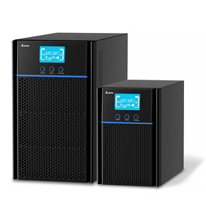
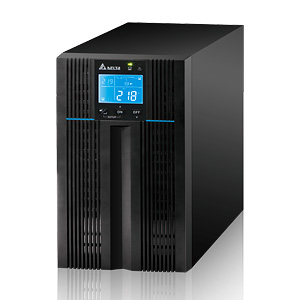
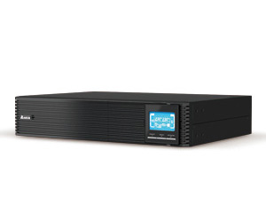
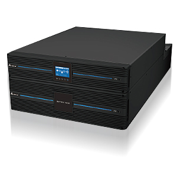
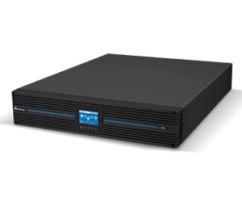
Three-phase online UPS, 20 kVA and up
Ultron systems carry mission-critical loads: industrial equipment, data centres, traffic control, broadcast stations and backbone networks. They support parallel operation and N+X redundancy, so one unit can be serviced or fail without the load going down.
| Series | Ratings | What sets it apart | Typical use |
|---|---|---|---|
| HPH | 20, 30, 40 kVA 60 to 120 kW 160, 200 kVA | Full rated power (kVA equals kW, no de-rating), up to 96% AC-AC efficiency and 99% in ECO mode, low input harmonics. | Server rooms, hospitals, labs, telecom, banking, metro |
| NT | 20 to 500 kVA | Delta's industrial UPS, built for harsh environments, with customised input and output ratings and N+X parallel operation. 93% efficient at full load. | Factories, pharma process lines, heavy industry |
| DPS | 160 to 500 kVA 300 to 1,200 kVA | IGBT rectifier, unity output power factor, and parallel operation up to 4,000 kVA (and higher on the large frames). | Large data centres, hospital campuses, colocation |
| DPM Gen2 | 250 to 1,750 kVA | Delta's high-capacity platform for the largest installations. | Hyperscale and enterprise data centres |
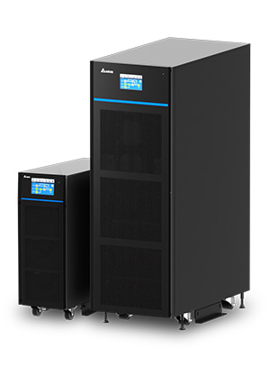
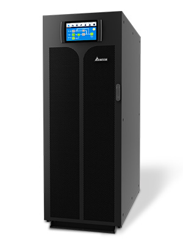
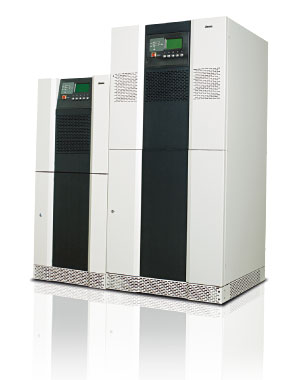
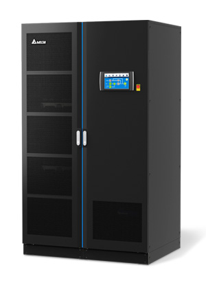
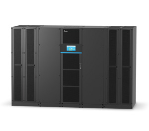
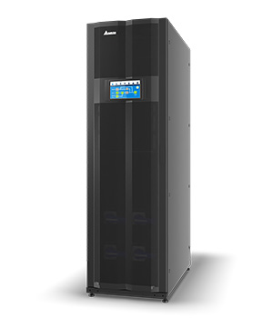
Modulon systems, from 20 kVA, are built from hot-swappable power modules. You buy the capacity you need now and add modules as the load grows, and a failed module can be swapped without shutting the system down.
The industries we serve, the equipment that needs protecting, and the family we usually recommend.
Projection servers, projectors, sound processors, ticketing and F&B counters. A power dip mid-show means a restart and refunds.
Amplon for booths and counters, Ultron for a whole complex
Lab analysers, imaging workstations, patient monitoring, hospital information systems. Clean power protects both results and patients.
Amplon N and RT at the equipment, Ultron HPH centrally
Process controls, QC labs, stability chambers, cleanroom monitoring and the data systems behind compliance.
Ultron NT on process lines, HPH for labs and IT
PLCs, SCADA, control panels and instrumentation in heat and dust, where an interruption can scrap a whole batch.
Ultron NT, built for harsh environments
Control rooms, CCTV and surveillance networks, communication systems and records that have to stay up around the clock.
Amplon for CCTV and offices, Ultron for control rooms
Servers, storage and network cores, where efficiency matters as much as uptime because the UPS runs 24 hours a day.
Ultron HPH and DPS, or Modulon to scale
Branch servers, ATMs, POS terminals and dealer desks spread across many sites.
Amplon INX, N and R series
Edit suites, render machines, storage and broadcast chains, the work our company started with.
Amplon RT for suites, Ultron for whole facilities
The UPS is only as good as how it is sized, installed and looked after.
We assess your load and backup time so you don't overpay or under-protect.
Wired, load tested and handed over by our own engineers.
Scheduled visits and priority breakdown support in AP and Telangana.
Product photos, ratings and figures are from Delta's published product information and can change as Delta updates its range. We confirm the exact model and current datasheet in your quote.
Tell us what you need to protect, your supply type and how long you need to run on battery. We'll recommend the right Delta model and price it with installation.
Get a quote